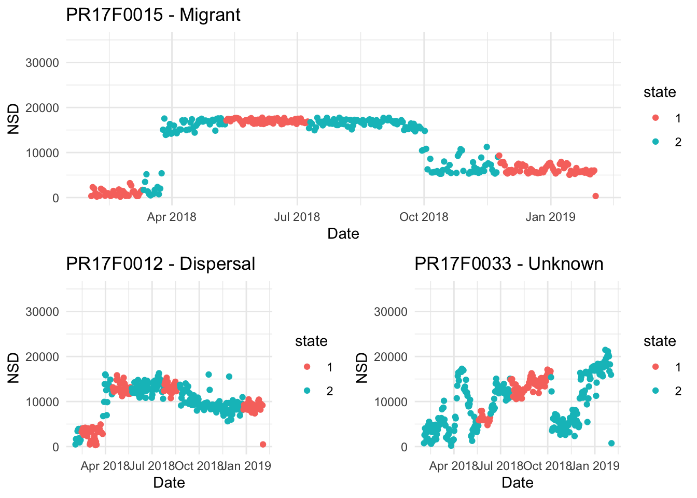

Chapter 4 Behavioral delineation
Pronghorn Behavior
To seperate out movement beahviors from GPS tracks, a hidden marrkov model can be used
to seperate out "encamped" vs "exploratory" behavior.
First, we need to prep the data. I am using an HMM previously fitted using the momentuHMM package. I will use this data to fit net square displacement plots to see who is migrant, who is not, and if there are any other behaviors I can observe.
Next, we will fit NSD plots using an HMM output that gives us a breakdown of movements between "encamped" and "exploratory".
Finally, I will subset this data to three individuals presenting different movement patterns.
# select idividuals presenting different movements
data1 <- data2 %>% filter(ID == "PR17F0015")
data3 <- data2 %>% filter(ID == "PR17F0012")
data4 <- data2 %>% filter(ID == "PR17F0033")
# plot each individual
p1 <- ggplot(data1, aes(x = dt, y = NSD, color = state)) +
geom_point() +
expand_limits(y = c(0, 35000)) +
theme_minimal()+
xlab("Date") +
ggtitle("PR17F0015 - Migrant")
p2 <- ggplot(data3, aes(x = dt, y = NSD, color = state)) +
geom_point() +
expand_limits(y = c(0, 35000)) +
theme_minimal()+
xlab("Date") +
ggtitle("PR17F0012 - Dispersal")
p3 <- ggplot(data4, aes(x = dt, y = NSD, color = state)) +
geom_point() +
expand_limits(y = c(0, 35000)) +
theme_minimal()+
xlab("Date") +
ggtitle("PR17F0033 - Unknown")
# group plots together
grid.arrange(p1,
arrangeGrob(p2, p3, ncol = 2),
nrow = 2) These individuals are presenting different movements. The top plot shows a mirant individual, the bottom right shows a disperser, and the bottom left shows an individual whose movements are not able to be catagotized.